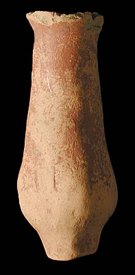

Type C
This is a long-necked type pot which is sometimes found at Indus Valley sites. It has a narrow long neck with a slight bulge at the base of the body with a definite base. It is not clear how a pot like this may have been used, except that the shape suggests it would probably have held liquid. This pot was probably hand-made, rather than on a potter's wheel, as its shape is irregular. Even after most pots were made using a potter's wheel, some were still made by other methods which were cheaper and faster. Some of the red paint which was originally used to decorate the pot is still visible. Although the paint is still visible, the pot was probably never painted with a particular design as no black decoration can be seen on the surface. |